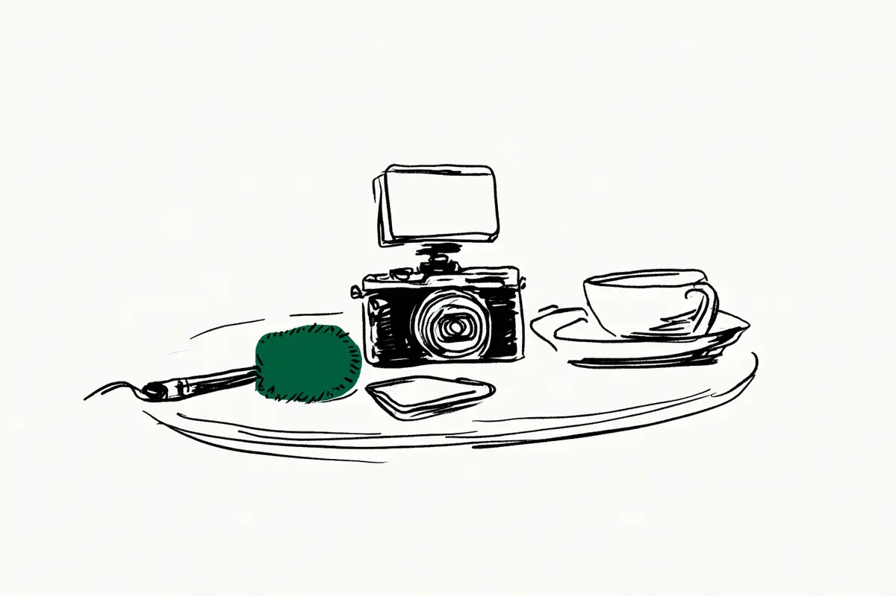

この記事には広告(アフィリエイトリンク)が含まれます。
現在地: 買う前に迷ってる
ソニー ZV-E10 IIの後悔・デメリット、買った人の不満と手放した理由

ZV-E10 IIを自分で買った・使っていると書いた48人のうち、買ったことを「後悔」と書いた人は2人です。1人は一眼の1台目をレンズキットで買ったことへの後悔で、同じ記事で、レンズを1本足して解消したと書いています。もう1人は、レンズなしで買えばよかったという後悔でした。ほかに、売ることを考えた人が1人、旅に持って行かなかった人が1人います。本体を手放した・替えた人は8人です(後悔の節)。
ZV-E10 IIは、Vlog(日常を撮る動画)向けの「VLOGCAM」シリーズの1台で、ソニーが2024年8月2日に発売したミラーレス(言葉の意味)です。センサーはAPS-C(フルサイズより小さい規格。言葉の意味)。型名は「ZV-E10M2」で、「ZV-E10II」「ZV-E10Ⅱ」とも書かれます。初代の「ZV-E10」と「ZV-E1」「ZV-1 II」は別の機種で、数えていません。私はカメラを持っていないので、人の声を集めて整理する側で、買う・買わないはすすめません。
- まだ買う前で、後悔しないか知りたい → 早見表、「後悔」と書いた人、手放した・替えた人、公式の数字と値段
- 買ったばかりで、ブレや熱が気になる → 手ブレ補正の節、熱・バッテリー・充電器の節、そのほかのデメリット
- 使っていて物足りなくなった → 売ることを考えた人と、別の機種を足した人
目次
- ZV-E10 IIのデメリット・欠点の早見表: 不満の種類、人数、その人がどうしたか
- ZV-E10 IIを買ったことを「後悔」と書いた人は2人: 初めての一眼をキットで買った人、レンズなしで買えばよかった人
- ZV-E10 IIを手放した・替えた8人: 行き先と理由を、人ごとに
- ZV-E10 IIのデメリット「ファインダー(のぞき窓)がない」: 公式の仕様は「-」
- ZV-E10 IIのデメリット「ボディ内手ブレ補正がない」: 公式はレンズ側の補正と動画の電子式
- ZV-E10 IIのデメリット「メカシャッターがない」: 公式は電子シャッターだけ
- ZV-E10 IIのデメリット「熱で止まる(熱暴走)・バッテリー・充電器」
- ZV-E10 IIのそのほかのデメリット: 暗い場所・キットレンズ・スマホとの差・重さ・操作
- ZV-E10 IIを書いた人の立場: 経験者、最初の1台の人、初めてのミラーレスの人
- ZV-E10 IIに満足した人の声: 軽さを損なわないレンズ選び
- ZV-E10 IIの公式の数字と販売状況(2026年11月時点)
- 数え方と偏り
- ZV-E10 IIは買わない方がいい?読んだ範囲の答え
ZV-E10 IIのデメリット・欠点の早見表: 不満の種類、人数、その人がどうしたか
48人のうち不満を1つでも書いた人は40人で、1つの話題を1行に分けました。私の読み方で、1人が2つ以上に入ります。右の列は、その行の人がどうしたかの内訳です。人数は集め方の影響を受けます(数え方の偏り)。
表の中の言葉の意味
- のぞき窓: 目を当てて見るファインダーのこと(言葉の意味)。ZV-E10 IIにはなく、背面の画面を見て撮る
- ボディ内手ブレ補正: 本体の中でセンサーを動かして揺れを消す仕組み。電子式の手ブレ補正(アクティブモード)は、動画の画面を少し切り取って揺れを消す仕組み(言葉の意味)
- メカシャッター: 幕が動いて光をさえぎるシャッター。ZV-E10 IIは電子シャッターだけで、速く動くものの形がゆがむことがある
- 4K・HD: 動画の細かさ(4Kの方が細かい)。ISO感度は暗い場所で明るく写すための数字(言葉の意味)、AFは自動のピント合わせ(言葉の意味)
- キット: 本体とセットのレンズ。ジンバルは揺れを打ち消す電動の持ち手、コンパクト機はレンズを替えられない小さなカメラ
| 種類(私の読み方) | 書いた人数 | その人がどうしたか(内訳) |
|---|---|---|
| 本体 | ||
| のぞき窓がない(晴れた屋外で画面が見にくい・写真を撮る道具に見えない・欲しくなる) | 6人 | 手放した・替えた3、使い続けている3(3人とも購入リンクあり) |
| 本体の手ブレ補正がない・手ブレが目立つ(写真・望遠の動画・歩きながらの動画・暗い場所) | 12人 | 手放した・替えた5、使い続けている6(6人とも購入リンクあり。1人は別の機種も足した)、相談1 |
| 電子式の手ブレ補正(写る範囲が狭くなる・ISO感度の上限・効き方が不自然) | 3人 | 手放した1、使い続けている2 |
| メカシャッターがない(速いものがゆがむ・照明のちらつき・フラッシュが使いにくい) | 6人 | 手放した・替えた2、使い続けている4(6人とも購入リンクあり) |
| 熱で止まる・長い動画の熱対策 | 4人 | 使い続けている3(冷却ファンを足した人など)、相談1 |
| バッテリー(1日撮るなら予備が要る・足りなくなる) | 2人 | 使い続けている2 |
| 充電器・ケースが付属しない・USBで充電できない | 3人 | 使い続けている2、相談1 |
| 暗い場所・ノイズ(暗い場所の動画・影の部分・室内) | 5人 | 使い続けている3、別の機種を足した1、相談1 |
| 重さ・大きさ(旅の荷物に入らない・小ぶりのかばんに収まらない・ジンバル込みで重い) | 3人 | 売ることを考えた1、別の機種を足した1、旅に持って行かなかった1 |
| AF(ごく暗い場所で合わせにくい・人の多い場所で見失う) | 2人 | 替えた1、使い続けている1 |
| 4Kで1秒120コマの動画が撮れない | 3人 | 使い続けている2、別の機種を足した1 |
| 操作(難しい・ボタンやダイヤルが少ない・メニューを開かないと変えられない設定) | 4人 | 手放した1、使い続けている3 |
| 写り・動画の物足りなさ(もっと大きく・もっと明るく・動画の力不足・野鳥・ぼやっと写る) | 4人 | 相談2、使い続けている1、別の機種を足した1 |
| スマホとの差(スマホの方がきれい・スマホで足りるのでは) | 3人 | 別の機種を足した2、使い続けている1 |
| 自撮りの写る範囲が狭い(2人で映る・電子式の補正を入れたとき) | 2人 | 手放した1、ZV-1 IIへ移った1 |
| 握りが浅い | 1人 | 部品を付けて使い続け、フルサイズ機を足した |
| ほかの機種と用途が重なる | 1人 | 手放した |
| 電車のLEDの表示が途中で切れて写る | 1人 | いずれほかの機種に移りたいと書く |
| 撮るときの小物の置き場(画面の日よけ・マイク) | 1人 | 設定で一部を解決して使い続けている |
| レンズ | ||
| キットのレンズ(暗い・JPEGで写りが甘い・キットで買ったことを後悔・2本で足りるか) | 4人 | 相談2、使い続けている1、別の機種を足した1 |
| 純正のレンズが高い | 1人 | 使い続けている |
並びは人数順ではなく、行の分け方で順位が変わります(のぞき窓と本体の手ブレ補正をまとめれば14人、キットのレンズ・スマホとの差・写りの物足りなさなら10人)。不満を書かずに手放した・替えた3人と、良い点は表に入っていません。手放す前の記事にだけ書かれた不満も入れています。
48人の結果を、購入リンクの有無で分けました(判定の仕方は数え方の偏りに)。
| 結果(私の読み方) | 人数 | うち購入リンクがないと確かめられた書き手 |
|---|---|---|
| 満足 | 3人 | 1人 |
| 満足と不満の両方を書いた(手放したとは書いていない) | 22人 | 7人 |
| ZV-E10 IIを残して(または処遇を書かずに)別の機種を足した | 6人 | 3人 |
| 手放した・替えた | 8人 | 5人 |
| 売る・替えることを考えている | 2人 | 2人 |
| 困りごとだけで、評価はない | 7人 | 7人 |
満足が3人と少ないのは、不満を1つでも書いた人を「両方」に入れたためです。「両方」の22人には、旅に持って行かなかったと書いた1人も入っています。
ZV-E10 IIを買ったことを「後悔」と書いた人は2人: 初めての一眼をキットで買った人、レンズなしで買えばよかった人
「ZV-E10 II 後悔」の検索で上に並ぶ海外の掲示板(Reddit)や動画は、書き手を確かめられないので数えていません。初代ZV-E10の話も混ざります。数えた48人のうち、自分の買い物に「後悔」の語を使った人は4人で、買ったことへの後悔が2人、後悔はないが1人、売っても後悔しないだろうが1人です。買ったことを「後悔」と書いた2人のうち1人は、同じ記事で、レンズを足して解消したと書いています。
フーコーさんは、2024年に一眼の1台目としてZV-E10 IIをキットのレンズ付きで買い、数か月たったころの気持ちを題と本文に書いた人です(2026年)。
「……スマホで十分綺麗じゃないか？」
「15万円も出したのに、一眼を買ったのは無駄だったのか？」
そのあと単焦点(写る範囲が決まったレンズ。言葉の意味)を1本足し、夜でも撮れるようになり、そのレンズを付けて約1年使った、と。記事の終わりではフルサイズ機を買ったとも書いています(ZV-E10 IIをどうしたかは書いていません)。スマホとの差で迷う話はスマホで十分?の記事に。
もう1人は知恵袋の質問者で、ダブルズームキットの2本を付け替えて使ってきた人です(2026年)。
無知から始めたので今となってはレンズ無しを最初に買えばよかったと後悔しています。
1本で広く撮れるズームに替えたい、望遠側の55-210mmでは野鳥に届かない、という相談でした。本体への不満は書いていません。
このサイトでは、後悔・使わなくなった・無駄だった、のどれかを本人が書いていれば後悔の側として数えます。無駄だったかと自分に問うたのはフーコーさんで、上のとおり解消まで書いています。「使わなくなった」と書いた人はいませんが、近い人が2人います。手のひら友の会さんは、初代ZV-E10から2026年5月に中古のZV-E10 IIへ替え、ジンバルに載せて祭りの動画を撮るつもりだった人です。7月、発売されたばかりの小型カメラだけを持って出かけ、こう書きました(2026年)。
結論を先に書くとZV-E10M2とジンバルは要りません。売却を考えます。
理由は、本体が大きく重いこと、ジンバルなしではうまく撮れないこと。売っても後悔しないだろう、とも書いています。ただし同じ記事の終わりで、画質を見比べて考えを変えています。
当然ながらZV-E10M2は更に上を行くので売るのはもっと後にします。
前の月の記事では、その小型カメラの仕様を2か月早く知っていれば買わなかった、と。もう1人のかげろうさんは、荷物を7kgまでに抑える12日間の旅に持って行かなかった人です(2026年)。
ほんとはzv-e10 iiを持ってきたかったですが、その重さと大きさを考えて選択できませんでした。
代わりにアクションカメラ(体や自転車に付けて撮る小さなカメラ)を持って行き、次の旅もそれ1台で行く可能性がある、と。カメラとしての出来は認めています。
後悔はないと書いた1人はcharming-akashi.comの酒本さんで、カメラの紹介もしているサイトの書き手です(2025年)。
ZV-E10 IIを手放した・替えた8人: 行き先と理由を、人ごとに
売った・手放した・下取りに出したと書いた人は4人、替えた・移ったとだけ書いた人は4人です。行き先は、ソニーのフルサイズが4人(α7C II 3人・α7III)、ソニーのAPS-Cのα6700が2人、ソニーのコンパクト機ZV-1 IIが1人、他社がOM SYSTEMのOM-1の1人。行き先の人数は、探した機種名の影響を受けます(数え方の偏り)。8人のうち3人は購入リンクのあるサイトの書き手です。理由は、手放した・替えたと書いた記事にあるものだけを数えました。
のぞき窓を挙げて、α6700へ替えた2人(1人は本体の手ブレ補正も、1人はメカシャッターも)
tiger3さんは、動画も少し撮る写真用として買った人です(2024年)。
しかし、結局手放すことに…。その理由は次の２点。
ファインダーがないこと（初めから承知していましたが。）
もう1点は、センサーを動かす方式の手ブレ補正が付いていないことで、これも買う前から知っていた、と。前にも持っていたα6700を中古で買い直しました。CHUさん(カメラの紹介もしているサイトです)は、行事の動画を撮るために初めてのミラーレスとしてダブルズームキットを買った人です。2026年1月の記事では、のぞき窓・メカシャッター・手ブレ補正に惹かれつつも買わずに踏みとどまると書き、2か月後に替えました(2026年)。
ファインダーはあったほうがいいです。
メカシャッターもあったほうがいいです。
のぞき窓は晴れた日の見やすさだけでなく構図を決めるときにも違った、と。動画のために買ったのに撮るものの8割が写真になったことも理由に挙げています。手ブレについては、ZV-E10 IIで歩きながら撮るのは厳しいと感じたが、手持ちのレンズ側に補正があって困らなかった、という書き方です。ブログの記事では、人の多い場所でピントが迷うことがあった、とも。売ったとは書いていません。
手ブレと自撮りの写る範囲で、ZV-1 IIへ移った1人
リュウタクさんは、2人で映るVlog用に買い、3か月使った人です。画質は今も気に入っているとしたうえで、気になった点を2つ並べています(2026年)。
手ブレが思ったより目立つ
APS-Cの16mmだと、自撮りしたときに顔が画面いっぱいになる
1人なら困らないが、2人で映ると窮屈だった、と。店で触ったZV-1 IIは18mmから撮れて余裕があり、軽く小さいので買った、と書いています。売ったとは書いていません。
ほかの機種との重なりと、電子式の手ブレ補正を挙げて手放した1人
ゆーすけ＠カメライカーさん(カメラの紹介もしているサイトです)は、初代と2台まとめて手放した人です(2024年)。
これはZV-E1も所有しており用途が被る点もございますが…
そしてアクティブ補正を使用するとなぜかISO感度が6400上限となります。
電子式の手ブレ補正を入れると写る範囲も狭くなるので、暗い場所では小さいセンサーの機種やアクションカメラと差がなくなる、という話です。ZV-E1とアクションカメラは残し(動画の主な機種は別にあります)、写真用にOM-1を中古で手に入れました。発売直後のレビューでは、気になった点として、電子式の補正を入れると自撮りには写る範囲が狭いこと、ボタンが少ないこと、メカシャッターがなくフラッシュが使いにくいこと、写真がブレやすいことを書いていました。こちらは手放した理由には数えず、早見表に入れています。
理由を書いていない・ZV-E10 II以外の理由の4人
Reijiro Kanekoさんは、Z30の記事にも出てくる人で、これはその前の話です(記事は小説仕立てです)。初めてのソニーで、初めは写りに感動し、しばらくはこの1台で使うつもりだったところへ、店で試したフルサイズ用のレンズを買い、本体も上の機種にしたくなった、と(2025年)。
3週間しか使っていないZVE10m2を下取りに出した足で某家電量販店に向かった。
α6700と比べてα7C IIにしました。ZV-E10 IIへの不満は書いていません。na²さんは、2025年6月に初めてのミラーレスとしてダブルズームキットを買い、その年に買ったもののまとめでは1位に挙げていた人です(2026年)。
軽くて使い勝手の良いカメラでしたが、諸事情により売却…
事情の中身は書いていません。約4か月後、買い戻すことも考えたうえで、写真が中心になるからと中古のα7IIIにしました。売る前の買って1か月の記事では、いまいちな点を2つ書いています。日ざしをさえぎるものがない所では昼間の画面が少し見にくく、のぞき窓が欲しくなること。もう1つは歩きながらの動画です(2025年)。
VLOGCAMシリーズですが、正直言うと歩き撮りで使うには手振れが厳しいなと感じました。
この2つも売った理由としては書かれていないので、早見表にだけ入れています。null.さんは、いまはα7C IIを主に使い、小型の富士フイルム機を足した人です(2026年)。
α7ciiの前はSONYのZV-E10ii使ってたけど、それよりも体感だと軽く感じた。
ZV-E10 IIの話はこの1文だけです。べちログの書き手(カメラの紹介もしているサイトです)は、初代ZV-E10からZV-E10 IIに替え、いまはα7C IIを使っています(2026年)。ZV-E10 IIから替えた理由は書いていません。
売る・替えることを考えた2人と、別の機種を足した6人
考えた2人。手のひら友の会さんは上の節に。海新シスさんは、コンパクト機3台のあとにZV-E10 IIを買い、電車を撮っている人です。2026年6月の記事で、いまは練習用で、いずれほかの機種に移りたいと書き、翌月には、電車の3色LEDの行先表示が途中で切れて写った、前に使っていたコンパクト機では切れなかった、と書いています。売るといくらになるかを無料で知る方法は売るなら、まず無料で相場を知るに。
別の機種を足した6人のうち、5人はZV-E10 IIを使い続けていると書いています。Fambrigeさん(カメラの紹介もしているサイトです)は、最初の1台としてパワーズームキット(電動でズームするレンズ付き)を買った人です(2026年)。
「なんかiPhoneで撮った方が明るいし、キレくない？」
キットのレンズは売って単焦点に替え、浅めの握りには部品を足しました。のちにα7C IIを買い、ZV-E10 IIは望遠のズームを付けて使っています。しゃもさん(カメラの紹介もしているサイトです)は、最初の1台として買い、1か月の記事で、もっと大きく写したい・より明るく撮れるレンズが欲しいという足りない点はあるが満足度は高い、と書いた人です。その翌月、FX3を買うか迷う記事では、ZV-E10 IIで足りてはいるが課題もあるとして、4つを並べています(2025年)。光を減らすフィルターを使いたい、4Kで1秒120コマを撮りたい、暗い場所にもっと強く、手ブレ補正ももっと強く。2025年12月にFX3を買い、薄暗い部屋のざらつきをきっかけに挙げました。2026年6月の記事では、ZV-E10 IIを2台目として併用しています。
みやこの旅と暮らしのログの書き手は、小ぶりのかばんに収まりにくく海外では持ち歩きにくいとして、コンパクト機のGR IVを足しました(2026年)。イレイさん(カメラの紹介もしているサイトです)は、動画の仕事にFX30を足し、その後の撮影でも2台を併用しています(2025年)。Gufoさんは、いまもZV-E10 IIを使っていて満足しているとしたうえで、色の違う2台目として、のぞき窓のある古い富士フイルム機を足しました(2026年)。ZV-E10 IIをどうしたかを書いていないのは、フーコーさん(上の節)の1人です。
ZV-E10 IIのデメリット「ファインダー(のぞき窓)がない」: 公式の仕様は「-」
ソニーの仕様表では、ファインダーの形式の欄が「-」(該当なし)です。これを不満や気になる点に書いた人は6人で、手放した・替えた人が3人(理由に挙げたのはtiger3さんとCHUさん。na²さんは売る前の記事。上の節)、使い続けている人が3人です。
No Mountain, No Life.の書き手(カメラの紹介もしているサイトです)は、重いフルサイズ機の代わりに山へ持って行く用として買い、1か月使った人です。
VLOGCAM ZV-E10 IIで一番辛いのが、ファインダーがないことです。
メニューを開かないと変えられない設定も挙げています。Yuuさん(カメラの紹介もしているサイトです)は、α6700も持ち、ZV-E10 IIを動画用に日々使っている人です(2025年)。
だけどやっぱりなぜかZV-E10IIは写真機としてなんか見れない自分がいる。
撮り方を選ぶダイヤルやのぞき窓がないせいか、と書いています。しずやさん(カメラの紹介もしているサイトです)は、欲しくなる場面がある、と(2026年)。
のぞき窓がないのは仕様です。使い続けている3人は全員がカメラの紹介もしているサイトの書き手で、購入リンクのない書き手でこの点を書いたのは、手放した・替えた人でした。逆に、本棚のない本屋の書き手(カメラの紹介もしているサイトです)は、散策で写真を撮って思ったほど困らなかった、と書いています(2026年)。のぞき窓のないZ30で同じ点を挙げた人の話はZ30の記事に。
ZV-E10 IIのデメリット「ボディ内手ブレ補正がない」: 公式はレンズ側の補正と動画の電子式
仕様表の手ブレ補正の方式は、静止画が「交換レンズ側対応」、動画が「交換レンズ側対応 (スタンダード時) / 電子式 (アクティブ時)」で、本体のセンサーを動かす補正の記載はありません。製品ページの注には、アクティブモードでは写る範囲が少し狭くなり、ISO感度が100〜6400になるとあります。
本体の補正がないこと・手ブレが目立つことを書いた人は12人です。手放した・替えた人が5人(理由に挙げたのはtiger3さんとリュウタクさん)、使い続けている人が6人、知恵袋の質問者が1人。電子式の補正の写る範囲や効き方を挙げた3人(ゆーすけ＠カメライカー・しずや・Digital-BAKA)は、12人の中にいます。
知恵袋の質問者は、写真の話として書いています(2024年)。
動画ではなく、写真を撮るときにブレるのが気になります。
しずやさんは、動画の補正を気になる点の最初に挙げ、本体に補正があれば印象は違っただろう、と書いています(2026年)。
電子手ブレ補正はありますが、正直もう少し頑張ってほしかったです。
Digital-BAKAの書き手は、アクティブモードをいちばんの弱点に挙げた人です。写る範囲が1.12倍ぶん狭くなる点は受け入れたうえで、補正がところどころ不自然で、歩いて撮る用途には合わない、と(2024年)。ニジノダディさんは、行事で望遠の動画を撮ると細かい揺れが出るので三脚を足した、と(2026年)。はるかさんは本体の補正がないのは惜しい、本棚のない本屋の書き手は暗い場所でブレやすいのでレンズ側の補正で補う、と書いています(4人ともカメラの紹介もしているサイトです)。
声に出たのは、歩きながらの動画の揺れ、望遠の動画の細かい揺れ、写真のブレでした。使い続けている6人は全員がカメラの紹介もしているサイトの書き手で、購入リンクのない書き手でこの点を書いたのは、手放した・替えた人と知恵袋の質問者です。気にならない側では、Yuuさんが買う前は気にしていたが買ってからは気にならない、komutaiさんが補正はそこそこ効く、べちログの書き手が手で持って動かずに撮るなら使える、と書いています(3人ともカメラの紹介もしているサイトです)。暗い場所で写真がブレる仕組みはオートなのにブレるのはなぜ?に。
ZV-E10 IIのデメリット「メカシャッターがない」: 公式は電子シャッターだけ
仕様表のシャッター方式は「電子シャッター」です。メカシャッターがないことを挙げた人は6人で、6人ともカメラの紹介もしているサイトの書き手です。替えた理由にしたのはCHUさんの1人(上の節)、ゆーすけ＠カメライカーさんは手放す前の記事でフラッシュの使いにくさを書き、残る4人は使い続けています。
ねこさんは、ZV-E10 IIを買い、自分のブログで初代と比べた人です。
メカシャッターレスの弱点の一つ目は「ローリングシャッター歪み」が発生する、という点です。
2つ目に照明のちらつきが写ることを挙げ、前側のダイヤルがないことも残念な点に書いています。komutaiさんは、古い一眼レフから替えた人です(2024年)。
高速で動くものを撮影すると歪むことがある
スーログの書き手は、カメラを左右に大きく振る撮り方には向かない、と書いています。はるかさんは、気になる点の1つにメカシャッターがないことを挙げています。メカシャッターがないことで書かれていたのは、速く動くものの形のゆがみ、照明のちらつき、フラッシュの使いにくさでした。
ZV-E10 IIのデメリット「熱で止まる(熱暴走)・バッテリー・充電器」
熱。 4人。ソニーのヘルプガイドには連続で撮れる時間の目安があり、4Kは設定によって約5分と約30分です(条件は公式の数字の表に)。知恵袋の質問者は、長い動画を撮る人です(2025年)。
撮影中に熱暴走でカメラが自動停止することが多発しています。
設定を変えても直らない、と。藤子さんは、熱対策に冷却ファンを足して4Kの動画を長く回している、と(2026年)。しずやさんは長い動画には熱対策が要る、なべさんは1日に何本も撮ると熱で止まること・電池が足りなくなることなどが出てきた、と書いています(3人ともカメラの紹介もしているサイトです。なべさんの記事は無料の部分だけを読みました)。本人がどの設定で撮ったかは書かれていないので、公式の時間と体験は比べられません。
バッテリー。 不満に書いたのは2人で、なべさんと、1日撮るなら予備が要ると書くHaiaoさん(カメラの紹介もしているサイトです)。予備の電池を持って行った人の声は旅行の記事の予備バッテリーの節に。
充電器・付属品。 3人。仕様ページには、USBケーブルとACアダプターは同梱しない、充電には別売の充電器を買うか本体のUSB Type-C端子を使う、という内容の注があります。はるかさん(記事は2026年にnoteへ載せたもので、書いた時期はそれより前です)は、別売の充電器も買った人です。
別売りの充電器（BC-QZ1）もあわせて購入したほうが便利です…なんで充電器ついていないの？
最初の1台として買ったやまの民さんも、充電器が別売でケースも付かないことを挙げています(2025年)。知恵袋では、買った月にUSB Type-Cの充電器につないでも充電されないと相談した質問者が1人(2025年)。
ZV-E10 IIのそのほかのデメリット: 暗い場所・キットレンズ・スマホとの差・重さ・操作
暗い場所・ノイズ。 5人。しゃもさんは上の節に。しずやさんは暗い場所の動画のざらつき、komutaiさんは前の一眼レフより影の部分のざらつきが気になること、ごく暗い所ではピントを合わせにくいことを挙げています。ド庶民無職CEOさん(カメラの紹介もしているサイトです)は、買ってよかったとしたうえで、ソニーのカメラは暗い所がやや不得意だ、と(2026年)。知恵袋では、ダブルズームキットで室内の動画が暗いと相談した質問者が、翌月に別の質問を立てています(2026年)。
zv-e10 iiでの動画にやや力不足を感じますが、どうでしょうか？
テレビの映像より色が薄く感じる、という内容です。
キットのレンズ。 4人。Fambrigeさんは上の節、キットで買ったことを後悔した質問者は後悔の節に。街の余白さんは、小型の機種を何台も使う人です(2026年)。
しかしながら、「jpg記録時のキットレンズの描写が甘い」という点がネックでした。
記録の形式を変えてパソコンで仕上げることで解決した、と。知恵袋では、キットの2本で望遠やボケは足りるかを尋ねた質問者が1人(2026年)。
スマホとの差。 3人。フーコーさんとFambrigeさんは上に書いたとおりで、もう1人のnicoさんは、店員にすすめられて最初の1台として買った人です(2026年)。
そして今のところ、普通にスマホのほうがきれいです。
nicoさんの話は初めてのカメラ、最初の一台は何で決めた?でも読みました。
重さ・大きさ。 3人(後悔の節の2人と、上の節の1人)。公式の質量は約377gです。
操作。 4人。春、花、日向さんは、最初の1台として買い、初心者向きと言われるが自分には難しいと書いた人です(満足の節)。ほかは、前側のダイヤル(ねこ)、メニュー(No Mountain, No Life.)、ボタンの数(ゆーすけ＠カメライカー)です。
写り・動画の物足りなさ。 4人。しゃもさんは上の節、力不足を感じた質問者はこの節の上に。新しい脆弱なblogの書き手(カメラの紹介もしているサイトです)は、動画用に買ったら写真も思った以上に撮れたが、野鳥ではレンズが大きくなり、シャッターを押す前の分まで残す連写がないのが不満、と(2026年)。知恵袋では、前よりぼやけて写るようになったと相談した質問者が1人(2024年)。
そのほか。 4Kで1秒120コマの動画が撮れないことは3人(スーログ・Digital-BAKA・しゃも)。おおもりごはんさんは、純正のレンズの値段に驚いた、と(2026年)。One More Lineさんは、フルサイズのα7 IIを下取りに出して買い、スマホを上に載せて撮ったときの画面の日よけやマイクの置き場を課題に挙げました(2025・2026年)。
ZV-E10 IIを書いた人の立場: 経験者、最初の1台の人、初めてのミラーレスの人
経験者(前に別のカメラを使った、ほかの機種を併用していると本文で分かる人)は18人。最初の1台と本文で確定できる人は5人(Fambrige・しゃも・やまの民・春、花、日向・nico)で、2人は別の機種を足しています。どちらとも分からない人が25人で、うち3人(na²・CHU・フーコー)は初めてのミラーレスと書いています。
手放した・替えた8人は、経験者4人・分からない人4人です。最初の1台と確定できる5人にはいませんが、初めてのミラーレスと書いた3人のうち2人(na²・CHU)は手放した・替えた側にいます。5人と3人の話なので、比べられる数ではありません。最初に買ったカメラの声をまとめた記事はこちらです。
ZV-E10 IIに満足した人の声: 軽さを損なわないレンズ選び
満足と読んだ3人は、経験者2人・分からない人1人で、購入リンクのあるサイトの書き手が2人います。引用枠にしたのは購入リンクのない書き手だけです。
しらすさんは、最初の記事でZV-E10 IIを休みの日の相棒と呼び、不満は書いていない人です(2026年)。
私の愛機 ZV-E10 IIは、驚くほど軽くてコンパクトです。
持ち味を損なわないよう、重さが増えすぎないレンズを選んだ、と。「両方」の側からは、春、花、日向さん。買って2週間、難しいと書きながら単焦点を1本足した日の記事です(2026年)。
カメラ選びに失敗したわけじゃなかった。
購入リンクのある2人は、あこさんと酒本さん(2人ともカメラの紹介もしているサイトです)。あこさんは、SNS用の動画を撮るカメラをZ30からZV-E10 IIに替えた人で、2026年9月の記事でも動画はZV-E10 IIです。写真用にZ30からZ50IIへ替えた話はZ50IIの記事に。酒本さんは、行事を撮るためにダブルズームキットを買った人です。
ZV-E10 IIの公式の数字と販売状況(2026年11月時点)
声に出た不満を、公式の数字と並べました。仕様ページ・製品ページ・発売のお知らせ・ヘルプガイド・公式通販のソニーストアを、2026年11月11日に見た値です。
| 項目 | 公式の記載 |
|---|---|
| 発売 | 2024年8月2日(発表は2024年7月10日) |
| 質量 | 約377g(バッテリーとメモリーカードを含む)。本体のみ約292g |
| ファインダー | 形式の欄は「-」(該当なし) |
| 手ブレ補正 | 静止画: 交換レンズ側対応。動画: 交換レンズ側対応(スタンダード時)/電子式(アクティブ時)。ボディ内(センサーを動かす)補正の記載なし |
| シャッター | 電子シャッター。静止画1/8000〜30秒 |
| 撮影可能枚数 | 約610枚(画面を使って撮るとき。業界の統一基準のCIPAに準拠。条件はヘルプガイドに)。実際の動画撮影は約130分(同) |
| 動画の連続撮影の目安 | ヘルプガイドの表。気温25℃・4K(1秒60コマ)で、[自動電源OFF温度]が[標準]のとき約5分、[高]のとき約30分。HDはどちらも約120分。気温40℃では4Kが約5分と約10分。電源をしばらく切った状態から出荷時の設定で始めた場合 |
| 背面モニター | 横に開いて回る方式の3.0型、約104万ドットのタッチパネル |
| 充電・同梱品 | 本体のUSB Type-C端子で充電できる。同梱品はバッテリーNP-FZ100・ストラップ・風よけなど。USBケーブルとACアダプターは同梱しないと書かれ、充電器は別売 |
| 防塵防滴 | 本体の記載なし |
| センサー | APS-C、有効約2600万画素(静止画) |
| 現行の構成 | ボディ、パワーズームレンズキット(16-50mm)、ダブルズームレンズキット(16-50mmと55-210mm)。色はブラックとホワイト |
| 公式通販の価格(2026年11月11日の表示) | ボディ152,900円、パワーズームレンズキット163,900円、ダブルズームレンズキット185,900円(税込) |
同じ日のソニーストアの購入ページには「カートに入れる」のボタンがありました。仕様と価格は変わるので、表の数字も自分で仕様ページで確かめてください。
手放した・迷った人の理由は、のぞき窓がないこと、本体の手ブレ補正がないことと歩きながらの動画の揺れ、メカシャッターがないこと、2人での自撮りの写る範囲、ほかの機種との重なり、旅に持って行くときの大きさでした。楽天市場の検索リンクを1つ置きます。置く条件は、購入リンクのない本人の体験が2人以上あり、不満の側(満足以外の結果の人)の声があることで、ZV-E10 IIは当てはまりました。私のおすすめではなく、値段や在庫を確かめるためのリンクで、どちらも日ごとに変わります。検索結果には初代のZV-E10やアクセサリーも混ざるので、商品名の「II」か型名「ZV-E10M2」を確かめてください。下のリンクは『ソニー ZV-E10 II』の名前で楽天市場を検索します。
数え方と偏り
数えたのは、自分でZV-E10 IIを買った、または使っていると書いた48人(note33人・個人ブログ8人・知恵袋の質問者7人)です。ほかの機種の人、家族の機体・借りた機体・買う前の相談・購入の報告や作例だけの人は数えていません。本人の体験と確かめられなかったnoteの書き手1人(使い続けていて、のぞき窓と電子式の補正を挙げ、後悔はないと書いていた人)も外しました。分け方は私の読み方です。
今回は人数の上限(60人)に届かなかったので、途中での打ち切りはしていません。ただし、持っていることは分かるものの評価がほとんど書かれていない人が21人いて、人数には入れず、名前だけを読んだ一覧に載せました。この21人は、手放す・売る・替えるの語が近くに出ないことを機械で確かめただけで、全文は読んでいません。割合として読むなら、分母は48〜69人の幅があります。手放した人が少ないのか、書く人が少ないのかは分かりません。
偏りは、ほかに5つあります。
- 探した語の偏り。「後悔」「手放した」「売った」「買い替え」「下取り」などの語と、次の機種(α6700・α7C II・FX30など)の名前からも探しました。手放した・替えた8人のうち題で見つかったのは3人で、残る5人は次の機種の購入記などの中にいました。行き先の人数は、探した機種の名前の影響を受けます
- 「後悔」の語の検索(2026年11月11日)で1〜3ページ目に出る本人の記事は4人分で、4人とも購入リンクのあるサイトの書き手です(ほかに、本人以外が使った話が1本)。3人は使い続けていて、1人(べちログの書き手)はα7C IIに替えています
- 購入リンクか広告の表記があるサイトの書き手23人には「(カメラの紹介もしているサイトです)」と添えています。個人ブログの8人は全員がそうでした。のぞき窓・本体の手ブレ補正・メカシャッターを不満に書いて使い続けている人は、全員がこの23人の中にいます。noteが自動で付けるタグとAmazonの共有リンクだけの人は「なし」に、同じ書き手の別のサイトにある人は「あり」にしました
- 満足・両方の人の一部は、不満や満足の語を含む文だけを機械で抜き出して読みました。後半や続きの記事の不満・手放した話を読み落としていれば、満足・両方が実際より多く出ています。tiger3さんは記事が600本を超え、手放した記事の前後(2024年8月〜2025年2月)は、月ごとの一覧に出る12本ずつしか読めていません
- 見つからなかったもの。一度手放してまた買った人、知恵袋で売るか・替えるかを相談した本人、熱・故障・重さを理由に手放した人、購入リンクのない書き手でのぞき窓や手ブレ補正を気にならないと書いた人は、この集め方では見つかりませんでした。いない、という意味ではありません。声の年は2024年8月〜2026年11月です
数えなかったのは、本人の購入体験が本文にない記事(名前は読んだ一覧に)、販売店・レンタル・メディアのページ、照合できないReddit・YouTube・X・Threads、それに価格.comの掲示板とレビュー(規約が私的・非営利目的に限るため、引用せず人数にも入れていません)です。
ZV-E10 IIは買わない方がいい?読んだ範囲の答え
買わない方がいい、とも、買った方がいい、とも、読んだ声からは言えません。のぞき窓も本体の手ブレ補正もないと知ったうえで買い、その2点が気になって手放した人がいます。同じ点を書いて使い続けている人は、読んだ範囲では全員がカメラの紹介もしているサイトの書き手でした。どちらが多いかは、この集め方では分かりません。
読んだ声にあった形は4つです。写真を撮ることが増えて、のぞき窓やメカシャッターのあるα6700へ替えた人。歩きながらの動画や自撮りで手ブレと写る範囲が合わず、小さいカメラへ移った人。ZV-E10 IIに不満を書かないまま、フルサイズ機へ替えた人や足した人。小さいカメラで足りると感じて、売ることを考えた人。公式の数字は上の表から自分の目で確かめてください。買う前の順番は初めてのカメラ、最初の一台は何で決めた?に。
ほかの機種の声と、買う前の確認
- キヤノン EOS R50の後悔・デメリット、買った人の不満と手放した理由
- ソニー α6400の後悔・デメリット、買った人の不満と手放した理由
- ニコン Z fc(Zfc)の後悔・デメリット、買った人の不満と手放した理由
- OM-D E-M10 Mark IVの後悔・デメリット、不満と手放した理由
- キヤノン EOS R10の後悔・デメリット、買った人の不満と手放した理由
- 富士フイルム X-M5の後悔・デメリット、買った人の不満と手放した理由
- ニコン Z30の後悔・デメリット、買った人の不満と手放した理由
- ニコン Z50IIの後悔・デメリット、買った人の不満と手放した理由
- 初心者が最初に買ったカメラ、口コミで多かった機種と後悔の声
- カメラを買うか迷ったら読む順番 ― 買う前に確かめる6つ
次に読むなら
この記事で読んだ84件
体験談78件(48人の出典。note 58件、個人ブログ11件、知恵袋9件)、数えなかったnote・ブログ、公式ページ6件に分けています。本文で使わなかったものには注記しました。
体験談58件(note 33人の出典)
- note(tiger3)「ZV-E10IIを使ってきて」(経験者、のぞき窓がない・センサーを動かす手ブレ補正がない(買う前から承知)、手放した、中古のα6700へ、2024年)
- note(ゆーすけ＠カメライカー)「MNG（マイ・ニュー・ギア）！OM SYSTEM OM-1 を購入しちゃいました！そして手放したカメラも…」(経験者、ZV-E1と用途が重なる・電子式の手ブレ補正で写る範囲が狭くなる・感度の上限、手放した(初代ZV-E10も一緒に)、OM-1へ、2024年。カメラの紹介あり)
- note(ゆーすけ＠カメライカー)「SONY ZV-E10 II は誰に向けたカメラか？」(同じ人、発売直後のレビュー。自撮りには写る範囲が狭い・ボタンが少ない・フラッシュが使いにくい・写真がブレやすい、2024年。カメラの紹介あり)
- note(Reijiro Kaneko)「初恋」(経験者、小説仕立て。ZV-E10 IIへの不満の記述なし(フルサイズ用のレンズを買ったのがきっかけ)、3週間で下取りに出した、α7C IIへ、2025年)
- note(na²)「2026年にSONY α7IIIを購入したお話」(初めてのミラーレス、手放した理由は書いていない、売った、約4か月後に中古のα7IIIへ、2026年)
- note(na²)「【ミラーレス一眼デビュー】SONY ZV-E10M2を購入したお話」(同じ人、買って1か月の記事。晴れた屋外で画面が見にくい・歩きながらの動画の手ブレ、2025年)
- note(na²)「【2025】買ったものまとめ / ＋ランキング」(同じ人、売る前の記事、2025年)
- note(CHU)「結局α6700を買ってしまったことについての言い訳をつぶやく」(初めてのミラーレス、のぞき窓・メカシャッター・本体の手ブレ補正がない・歩きながらの動画の揺れ、替えた、α6700へ、2026年。カメラの紹介あり)
- note(CHU)「ZV-E10Ⅱを使い続ける僕がα6700を買わずに踏みとどまった理由」(同じ人、2026年。カメラの紹介あり)
- note(リュウタク / RYUTAKU)「ZV-E10 II→ZV-1 II に移行」(手ブレが目立つ・2人での自撮りでは窮屈、移った、ZV-1 IIへ、2026年)
- note(リュウタク / RYUTAKU)「[68万人Vlog Youtuber]最強のVlog撮影のカメラは何か考える。。。」(同じ人、2025年。本文では使っていません)
- note(null.)「X-T30iii＝軽快なスナップシューター」(理由の記述なし、替えた、α7C IIへ、2026年)
- note(手のひら友の会)「Insta360 Luna Ultraで撮影した祇園祭山鉾巡行」(経験者、大きく重い・ジンバルがないとうまく撮れない、売ることを考えたが先に延ばした、初代ZV-E10から替えた、2026年)
- note(手のひら友の会)「SONY ZV-E10M2で動画を撮影する際にInsta360 X5でも同時に撮影する。」(同じ人、2026年)
- note(手のひら友の会)「Insta360 Luna Ultraは買いか？」(同じ人、2026年)
- note(手のひら友の会)「夏の祇園祭先祭(山鉾巡行)に持って行くカメラは？（5/1機材変更追記中）」(同じ人、2026年。本文では使っていません)
- note(手のひら友の会)「今年の京都祇園祭はInsta360 Luna Ultraで撮影するので晴れてほしい」(同じ人、2026年。本文では使っていません)
- note(あこ)「noteはじめます｜カメラをニコンZ30からソニーZV-E10 IIにかえた話」(経験者、満足、Z30から動画用に替えた、2026年。カメラの紹介あり)
- note(あこ)「本日ニコンから「Z5ⅡC」が発表予定？Z30ユーザーのわたしが期待していること」(同じ人、2026年。カメラの紹介あり)
- note(Gufo)「初めてのFUJIFILMはXE-2」(経験者、不満の記述なし、古い富士フイルム機を足した(ZV-E10 IIも使っている)、2026年)
- note(Fambrige)「僕とSONYのこれまで」(最初の1台、キットのレンズが暗い・握りが浅い・スマホの方が明るく見えた、α7C IIを足した(ZV-E10 IIは望遠用に使い続ける)、2026年。カメラの紹介あり)
- note(フーコー)「一眼、買わなきゃよかった」という後悔を、このレンズが救ってくれた。｜VILTROX AF 25mm F1.7 レビュー」(初めてのミラーレス、スマホで足りるのでは・無駄だったのかと感じた(レンズを足して解消と書く)、フルサイズ機を足した、2026年)
- note(みやこの旅と暮らしのログ)「[暮らし] RICOH GR4が買えた！」(小さいバッグに入れにくい、コンパクト機のGR IVを足した、2026年)
- note(かげろう)「旅行に持っていくカメラ ２」(重さと大きさで旅に持って行かなかった、両方、2026年)
- note(Yuu)「写真機としてみれないZV-E10II だけど軽くて快適だから撮ってしまう」(経験者、写真を撮る道具に見えない(のぞき窓・ダイヤルがない)、両方、α6700も使う、2025年。カメラの紹介あり)
- note(街の余白)「古川にかかる芝園橋、将監橋、金杉橋」(経験者、JPEGでキットのレンズの写りが甘い、両方、2026年)
- note(街の余白)「デリーに行ったつもりで新しいカメラを買う｜ZV-E10II」(同じ人、2026年。本文では使っていません)
- note(しずや)「軽いから持ち出せる。持ち出せるから撮れる。ZV-E10 IIと夜散歩した話」(動画の電子式の手ブレ補正と本体の補正がないこと・暗い場所の動画のざらつき・のぞき窓が欲しい場面・熱対策、両方、2026年。カメラの紹介あり)
- note(しゃも)「ZV-E10M2を1ヶ月使ってみたパパカメラマン｜家族Vlogにちょうどいい理由」(最初の1台、もっと大きく写したい・より明るく撮れるレンズが欲しい・暗い場所・4Kで1秒120コマ・手ブレ補正、FX3を足した(ZV-E10 IIは2台目として使っている)、2025・2026年。カメラの紹介あり)
- note(しゃも)「FX3を今買うか、後継機を待つか」(同じ人、FX3を足すか迷った記事。題は一部を省いています、2025年。カメラの紹介あり)
- note(しゃも)「初心者なのにFX3を買いました｜高性能すぎて日常の家族Vlog用途なのにやり過ぎかも？」(同じ人、2025年。カメラの紹介あり)
- note(しゃも)「9カメ編集でPCが止まった日。初心者パパカメラマンがプロユースの「DaVinci Resolve」の有料版を選んだ理由」(同じ人、2026年。カメラの紹介あり)
- note(しゃも)「初のGMレンズ FE 24-70mm F2.8 GM II を購入｜パパカメラマンが「言い訳」を捨てた日」(同じ人、2026年。本文では使っていません。カメラの紹介あり)
- note(しゃも)「家族VLOGの世界が変わる買ってよかったモノ｜SONY ZV-E10 II と OSMO POCKET 3」(同じ人、2025年。本文では使っていません。カメラの紹介あり)
- note(はるか)「ソニー「VLOGCAM ZV-E10 II」レビュー！動画も写真もこなせる小型ミラーレスカメラ」(経験者、充電器が付属しない・メカシャッターがない・本体の手ブレ補正がない、両方、2026年にnoteへ載せた記事。カメラの紹介あり)
- note(やまの民)の購入レビュー(題は一部を省いています。最初の1台、充電器が別売・ケースが付属しない、両方、2025年)
- note(なべ)「【実録】ZV-E10 IIはYouTubeのメイン機になれるか？1日4本撮影で判明した致命的な欠点と対策」(熱で止まる・電池が足りなくなる、両方、無料の部分だけを読んだ、2026年。カメラの紹介あり)
- note(なべ)「初心者がYouTubeの収益化を目指す道のり」(同じ人、2026年。本文では使っていません。カメラの紹介あり)
- note(藤子)「2026年上半期に買ってよかったもの」(経験者、4Kの動画の熱(冷却ファンを足した)、両方、2026年。カメラの紹介あり)
- note(ニジノダディ)「【2026年版】SONY VLOGCAM ZV-E10 IIを1年間使った感想｜運動会・発表会用なら今でも自信を持っておすすめ」(望遠の動画で細かい揺れ(三脚を足した)、両方、2026年。カメラの紹介あり)
- note(ド庶民無職CEO)「【ZV-E10 II】「iPhoneでよくない？」と思っていた私が、愛犬を高画質で残したくて買ったカメラ」(ソニーのカメラは暗い所がやや不得意と書く、両方、2026年。カメラの紹介あり)
- note(しらす)「SHIRASU log tips #2｜私がSIGMA 18-50mm F2.8を選んだ理由。」(満足、2026年)
- note(しらす)「はじめまして。ZV-E10 IIと歩く、休日の記録。」(同じ人、2026年)
- note(春、花、日向)「ニャンコの写真練習④ | レンズを変えてみた」(最初の1台、難しい・説明書が分かりにくい、両方、2026年)
- note(春、花、日向)「ニャンコの写真練習⓪｜下手な上にムっとされる」(同じ人、2026年)
- note(春、花、日向)「初めてカメラを買ってニャンコを撮ってみましたが。。。」(同じ人、2026年。本文では使っていません)
- note(nico)「カメラデビューしました」(最初の1台、スマホの方がきれい、両方、2026年)
- note(komutai)「SONY ミラーレスカメラ VLOGCAM ZV-E10 IIレビュー・作例（2024年11月）」(経験者、速いものがゆがむ・ごく暗い所でピントを合わせにくい・影の部分のざらつき、両方、一眼レフから替えた、2024年。カメラの紹介あり)
- note(海新シス)「みなさんのカメラはどこ製？」(電車のLEDの表示が途中で切れて写る、いずれほかの機種に移りたいと書く、コンパクト機から、2026年)
- note(海新シス)「LED幕に強くなりたい」(同じ人、2026年)
- note(海新シス)「SONY ZV-E10Ⅱのレビュー」(同じ人、2026年。本文では使っていません)
- note(おおもりごはん)「【2025年ベストバイ】今まで使っていて・新たに買って手放せないと思うものだけ紹介。」(純正のレンズが高い、両方、2026年)
- note(One More Line)「さて、どのAPS-Cカメラに替えるか？」(経験者、画面の日よけやマイクの置き場、両方、α7 IIを下取りに出して、2025・2026年)
- note(One More Line)「テスト運用からの反省点」(同じ人、2026年)
- note(One More Line)「さよなら α7ii」(同じ人、2025年。本文では使っていません)
- note(イレイ)「ついに到着！僕の本気！」(不満の記述なし、FX30を足した、2025年。カメラの紹介あり)
- note(イレイ)「飲食店PR動画の撮影をしました！」(同じ人、2025年。カメラの紹介あり)
- note(ねこ)「ZV-E10 IIで撮る vol.1「 冬の御堂筋イルミネーションを手持ちでスナップ」全18枚」(経験者、前側のダイヤルがない・メカシャッターがないことの弱点(どちらもブログの記事)、両方、2025年。本文では使っていません。カメラの紹介あり)
体験談11件(個人ブログ8人と、noteの2人が別に書いているブログの出典)
- CHU-GIRIN「ZV-E10 II：ミラーレス一眼レフをド素人が買った感想①【概要とSDカードの落とし穴】」(noteのCHUさんと同じ人、2025年。カメラの紹介あり)
- CHU-LAB「ZV-E10IIも良かった。それでもα6700にした理由」(noteのCHUさんと同じ人、人の多い場所でピントが迷うことがあった、2026年。カメラの紹介あり)
- digi-cam.net「【新旧比較】ZV-E10 IIとZV-E10はどっちが買い？違いはどこ？」(noteのねこさんと同じ人。カメラの紹介あり)
- べちログ「【2026年】ZV-E10を今買うのはアリ？初代→Ⅱに買い替えた自分の本音レビュー」(経験者、ZV-E10 IIから替えた理由の記述なし、替えた、α7C IIへ、初代ZV-E10から替えた、2025年公開・2026年更新。カメラの紹介あり)
- スーログ「ZV-E10IIレビュー！こりゃ良いわ！CanonユーザーがSony買って感じたこと」(経験者、電子シャッターのゆがみ・4Kで1秒120コマが撮れない、両方、2024年公開・2026年更新。カメラの紹介あり)
- No Mountain, No Life.「サブ機ではもったいない！Sony VLOGCAM ZV-E10 II」(経験者、のぞき窓がない・メニューを開かないと変えられない設定、両方。カメラの紹介あり)
- Haiao「Sony ZV-E10M2レビュー！数カ月使って分かったこと。「買って正解」の理由と、最高の相棒機材たち。」(1日撮るなら予備の電池が要る、両方。カメラの紹介あり)
- 新しい脆弱なblog「去年から悩んでいるカメラ問題について」(野鳥の写真ではレンズが大きくなる・押す前の分まで残す連写がない、両方、2026年。カメラの紹介あり)
- 本棚のない本屋「ZV-E10Ⅱ写真撮影は快適？軽井沢で散策してしてわかった本音」(本体の手ブレ補正がなく暗い場所でブレやすい、両方、2026年。カメラの紹介あり)
- 【Digital-BAKA】「【正常進化だが弱点もある】SONY「VLOGCAM ZV-E10 II」忖度なし自腹レビュー【新レンズキット付き】」(経験者、電子式の手ブレ補正の効き方が不自然・4Kで1秒120コマが撮れない・本体の手ブレ補正がない、両方、2024年。カメラの紹介あり)
- charming-akashi.com「子どもの成長を撮る初めてのカメラはソニーZV-E10 IIがおすすめ」(経験者、満足(後悔はないと書く)、2025年公開・2026年更新。カメラの紹介あり)
体験談9件(知恵袋7人の出典。題は質問の1文目、または句点のない見出し行)
- 「zv-e10 iiダブルズームレンズキットを使ってます。」(ダブルズームキットで室内の動画が暗い、困りごと、2026年)
- 「オススメのapsc単焦点レンズを教えてください。」(同じ人、2026年。本文では使っていません)
- 「zv-e10 iiでの動画にやや力不足を感じますが、どうでしょうか？」(同じ人、動画の力不足・色が薄く感じる、2026年)
- 「SonyのZV-E10Ⅱを使用して動画撮影をしていますが、」(熱で止まることが多い・ファイルが分かれる、困りごと、2025年)
- 「ZV-E10ⅱのレンズについてご意見聞かせてください。」(キットで買ったことを後悔・望遠側が野鳥に届かない、困りごと、2026年)
- 「【ミラーレス一眼について】」(写真がブレる、困りごと、2024年)
- 「現在、SONYのZV-E10M2のカメラを使ってるのですが、以前は撮影した写真を拡大しても外淵までくっきり写っていたのに今ではボヤッと映るようになってしまいました。」(前よりぼやけて写る、困りごと、2024年)
- 「カメラ初心者です。」(キットの2本で足りるか、困りごと、2026年)
- 「今月の中旬にSONYのブイログ用カメラを購入したのですが、（ZV-E10M2）」(USB Type-Cの充電器で充電されない、困りごと、2025年)
数えなかったnote・ブログ(評価がほとんど書かれていない、本人の購入体験が本文にない、またはZV-E10 IIを買っていないもの。名前のみ)
- 持っていることは分かるが、評価がほとんど書かれていない本人21人(人数に入れていません。ZV-E10 IIの近くに手放す・売る・替えるの語が出ないことを機械で確かめただけで、全文は読んでいません): 金しまっ・かいしん音楽【ドラムの音楽教室】・No.M'z映像制作所・txtxt・つけあげ@新潟・くまちか🧸・muraminex・のみすけまる・芋頭monkey・mia・あまなっとう・ながけい・HR・詩波 航 / Utanami Haru・shogo｜旅行系動画投稿者・まやま・midou・Iris・bamboo@milktub・あおしまくん | 趣味、写真。・ゆずぽん
- note: SO・AIクリエイター然・GadgetGear【ガジェットギア】・物欲名古屋人／サラリーマンYoutuber・育てるアプリ⭐️てのねこ・Shion(持っている機種として名前が出るだけで、評価の記述がない)、ジャーヴィスノート(家族の機体)、社会人6年目の備忘録・るんの備忘録・hiromi63 / ZINEography・ふうゆ・toibo・こおろぎ（裏）・Oography・フォトグラファー西ゆきえ・セブンパワード・ぬん(買う前・別の機種を選んだ)、ma_ko・カメラマン養成講座【迷わず選べるカメラと機材のセレクトガイド】・ガジェログ！・ガジェット案内所・さーもん@テクノロジーを解説・The 比較・キツネ・まんたろう｜中古カメラマニア(比較・選び方・紹介で、本人の購入の記述が本文にない)、CAMERA DAYS｜日々カメラ・workforfebruary・muse・マネ活たぬきの独りゴト(初代ZV-E10)、GOOPASS MAGAZINE(事業者)、みるたん(本人の体験と確かめられなかった)。はるかさんの別の記事は、本人以外が使った話なので使っていません
- ブログ: masalife-blog・CHRONO・静かな坂道・saadon0121(購入の報告だけで評価の記述がない)、mo-gadget-no-fan(買う前)、for-toru.com(メーカーから借りた機体の記事)、47prefectures.com・takacblog(熱で止まるまでの時間を測った検証記事)、creator-goods・kunkoku・sionero・sincereentertainment・joy-camera・yb-taro・saboten-blog(比較・設定の解説・紹介で、本人の購入の記述がない)、higashisa.com・one-100blog・simplelivingnote(初代ZV-E10)。みんなのカメラ・キタムラ・テックスタッフ・フジヤカメラ・ヨドバシ・マップカメラ・AV Watchなどの事業者・メディアのページと、価格.com・Reddit・YouTube・X・Threadsは数えていません。知恵袋では、買う前の相談、初代ZV-E10やα6600の人の質問、回答者の体験は数えていません
公式ページ6件
- ソニー VLOGCAM ZV-E10 II 主な仕様(質量・ファインダー・手ブレ補正・シャッター・撮影可能枚数・モニター・端子・同梱品・センサー。2026年11月11日取得)
- ソニー VLOGCAM ZV-E10 II 製品ページ(現行の構成、アクティブモードの注。2026年11月11日取得)
- ソニー ニュースリリース(2024年7月10日)(発売日。2026年11月11日取得)
- ソニー ヘルプガイド「動画の記録可能時間」(動画の連続撮影についてのご注意の表。2026年11月11日取得)
- ソニー ヘルプガイド「バッテリーの使用時間と撮影可能枚数」(撮影可能枚数とその条件。2026年11月11日取得)
- ソニーストア VLOGCAM ZV-E10 II 購入ページ(価格、「カートに入れる」の表示。2026年11月11日に画面で確認)
引用は2026年11月11日に取得した各ページで確認しました。